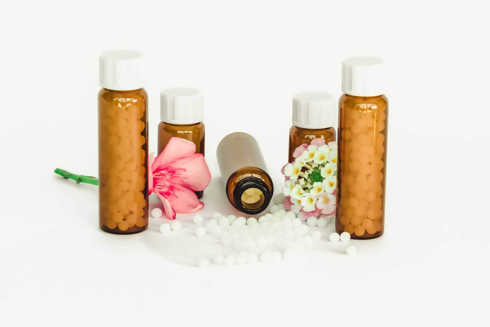

Salud
La medicina científica (también conocida como alopática u occidental) es la medicina convencional, considerada oficial en nuestro sistema de salud.
La medicina tradicional, por su parte, es el conjunto de prácticas, creencias y conocimientos sanitarios basados en el uso de recursos naturales (plantas, animales o minerales), terapias espirituales y técnicas manuales que buscan mantener la salud individual y comunitaria.
Ambas medicinas comparten una misma naturaleza en lo esencial y las diferencias surgirían, sencillamente, debido a la coyuntura en la que se desenvuelve cada una. La diferencia esencial entre la medicina tradicional y la medicina académica no es una diferencia entre un enfoque científico racional y un conocimiento empírico, sino un problema de dos ideologías diferentes. Ambas deben aprender a convivir para superar los obstáculos que supone esta aparente, más no absoluta dicotomía.
Más allá de lo que se exponga en esta sección, recordá SIEMPRE consultar con un médico profesional ante cualquier síntoma que manifiestes.
Medicina tradicional
La medicina tradicional es todo el conjunto de conocimientos, aptitudes y prácticas basados en teorías, creencias y experiencias indígenas de las diferentes culturas, sean o no explicables, usados para el mantenimiento de la salud, así como para la prevención, el diagnóstico, la mejora o el tratamiento de enfermedades físicas o mentales (OMS).

De esta manera la medicina tradicional, se traduce en un cúmulo de conocimientos almacenados que forman parte del bagaje sociocultural de las comunidades y sociedad, a fin de proteger su estado de salud y enfermedad. Como lo menciona OMS “La medicina tradicional tiene una larga historia. Es la suma total de los conocimientos, capacidades y prácticas basados en las teorías, creencias y experiencias propias de diferentes culturas, bien sean explicables o no, utilizadas para mantener la salud y prevenir, diagnosticar, mejorar o tratar enfermedades físicas y mentales”.
La medicina tradicional sigue coexistiendo gracias a la transmisión oral del conocimiento de generación en generación, a través de procesos de aprendizaje y reconocimiento de lo originario y tradicional de cada pueblo. Reconocimiento que también ha sido asumido por OMS, dado que la medicina tradicional ha venido contribuyendo en el acceso a la atención en salud, basado en una atención sanitaria accesible y asequible tanto económica como socioculturalmente.
La medicina tradicional ha venido aportando a través de la legitimización y empoderamiento de los conocimientos y procedimientos ancestrales, que en la práctica han devenido en aportes favorables no solo para el paciente, sino también para el ámbito de la salud pública y las investigación en salud, por ejemplo ha contribuido en la forma de concebir el proceso de salud y enfermedad, desde un enfoque particular y específico en cada escenario en el que se ha desencadenado el proceso.
La existencia de agentes de salud, repertorios y recursos terapéuticos propios. Marcos institucionales tradicionales de reconocimiento de conocimientos, agentes de salud y procedimientos terapéuticos y el desarrollo de determinados itinerarios terapéuticos.
La medicina integradora y la salud y la medicina alternativa y complementaria (MAC) incluyen estrategias de curación y terapias que en la historia no han sido incluidas en la medicina convencional occidental dominante.
Medicina complementaria, alternativa e integradora son términos que a menudo se usan indistintamente, pero sus significados son diferentes.
- La medicina complementaria se refiere a prácticas no convencionales usadas junto con la medicina convencional.
- La medicina alternativa se refiere a prácticas no convencionales utilizadas en lugar de la medicina convencional.
- La medicina integradora es la atención sanitaria que utiliza todos los abordajes terapéuticos adecuados (convencionales y no convencionales) en un marco que se centra en la salud, la relación terapéutica y la persona como un todo.
Medicina oriental
La medicina china tradicional se basa en el concepto de chi (o energía vital) equilibrado, que se cree que recorre el cuerpo de la persona. Quienes practican esta medicina proponen que el chi regula el equilibrio espiritual, emocional, mental y físico y está afectado por las fuerzas opuestas del yin («energía» negativa) y el yang («energía» positiva).
Según la medicina china tradicional, la enfermedad ocurre cuando se altera el flujo del chi y se produce un desequilibrio del yin y el yang. Los componentes de este tipo de medicina comprenden fitoterapia y dietoterapia, ejercicios físicos, meditación, acupuntura y masajes reparadores.
Tiene como base filosófica la observación y el conocimiento de las leyes que gobiernan el funcionamiento del organismo humano y su interacción con el entorno, siguiendo los ciclos de la naturaleza; buscando aplicar esta comprensión al tratamiento de las enfermedades y el mantenimiento de la salud con métodos diversos.
Actualmente, la medicina tradicional china está incorporando diversas técnicas y teorías de la medicina basada en la evidencia en su praxis, en especial aquellos tipos de exámenes diagnósticos sin características invasivas.
Para trabajar con los sistemas diagnósticos de la medicina tradicional china, es necesario desarrollar la capacidad de observar aspectos sutiles, para poder captar aquellos aspectos del paciente, que se le escapan a la observación de la mayoría de la gente.
Técnicas de medicina oriental: Acupuntura, Shiatsu, Reiki y Taichi
ACUPUNTURA
Es una técnica de medicina tradicional china que trata de la inserción y la manipulación de agujas en el cuerpo con el objetivo de restaurar la salud y el bienestar en el paciente. Existen diversas variantes como la japonesa y la coreana.
SHIATSU
El Shiatsu es una técnica de masaje originada en Japón que sigue princpios similares a la acupuntura, según el ministerio de Sanidad de Japón el Shiatsu se define así: “Tratamiento que, aplicando presiones con los dedos pulgares y las palmas de las manos sobre determinados puntos del cuerpo, corrige irregularidades, mantiene y mejora la salud, contribuye a aliviar diversas enfermedades y activa la capacidad de autocuración del organismo. No tiene efectos secundarios”.
REIKI
Reiki es una técnica japonesa que funciona canalizando la energía que nos rodea, hacia nosotros y hacia otras personas. Su objetivo es eliminar el estrés y otras dolencias para conseguir armonía en el cuerpo.
TAI CHI
El Tai Chi Chuan es un arte marcial chino calificado como arte marcial interno, conocido en occidente por las características secuencias de movimientos que realizan sus practicantes. En estas secuencias se observa: unión de la conciencia y el movimiento corporal, lentitud, flexibilidad, circularidad, continuidad, suavidad y firmeza; características que transmiten un sentimiento de armonía y serenidad.
Terapias holísticas
Quienes están acostumbrados a las prácticas alopáticas no suelen entender en qué consiste la medicina holística. La diferencia es muy simple: esta es una práctica en la cual no se intenta curar una enfermedad puntual, sino de sanar el cuerpo, el alma y la mente de una persona utilizando tanto terapias alternativas como convencionales. Este tipo de medicina entiende que una persona es atacada por enfermedades debido desequilibrios ambientales, sociales, físicos, espirituales o emocionales, por lo cual el el médico pasa a ser un mentor que va guiando al paciente para tratar y prevenir las diferentes enfermedades que pudieran llegar a atacar al cuerpo. La medicina holística que conocemos hoy en día tiene raíces en tres culturas diferentes: China, India y Grecia.
Tipo de terapias holísticas:
La medicina holística comprende un conjunto muy variado de terapias alternativas o complementarias que tienen como fundamento sanar de manera integra a la persona, tanto en su cuerpo, como mente y espíritu.
Para la medicina holística, el ser humano posee poderes de sanación naturales, que se relacionan con la interacción de los tejidos corporales como con el medio ambiente. En estas, se usan tratamientos muy antiguos y tradicionales y otros modernos.
A pesar de que no todos los tipos de técnicas de la medicina holística están completamente aceptadas tanto por la gente como por la medicina convencional, muchas de estas han sido reconocidas como métodos efectivos para sanar y prevenir problemas y enfermedades en las personas.
Fitoterapia
Tratamiento de las enfermedades por medio de plantas; medicina a base de plantas o sustancias vegetales para el tratamiento de una amplia variedad de síntomas y enfermedades y la mejoría de las funciones de los órganos y sistemas corporales.
Arboterapia
Terapia que propugna el reencuentro con la naturaleza mediante convivencia y abrazos a los árboles, en busca de la paz y la armonía de los bosques y como medio para sentirse mejor, desarrollar los sentidos, disminuir el estrés y la ansiedad..
Aromaterapia
Disciplina terapéutica que aprovecha las propiedades de los aceites esenciales extraídos de las plantas aromáticas, para restablecer el equilibrio y armonía del cuerpo y de la mente para beneficio de nuestra salud y belleza.
Terapia floral
Conocidas generalmente como flores de Bach. Consiste en un método de curación que se asienta sobre la base de que el origen de la enfermedad es emocional. Cada esencia floral se corresponde con determinados rasgos de personalidad, actitudes y emociones del ser humano.
Terapias Homeopáticas
La homeopatía es una terapia muy popular actualmente, ya que apuesta por una curación basada en los ingredientes naturales, no en los químicos. Es un tratamiento muy utilizado en el caso de dolencias menores, tales como dolores de cabeza, insomnio, fatiga, etcétera. La filosofía de la homeopatía se basa en aprovechar los principios activos que existen en las plantas e ingredientes de origen natural para reforzar nuestro organismo y protegerlo de agresiones externas.
Los medicamentos homeopáticos son el resultado de la mezcla de diferentes propiedades activas con agua o alcohol.
En términos generales, la homeopatía está elaborada con ingredientes de origen vegetal o animal; pero también puede contar con ingredientes minerales u orgánicos para ofrecer una respuesta más eficaz.
Para elaborar un medicamento de homeopatía, se siguen dos procesos básicos:
- Dilución. El principio activo natural se disuelve con agua o con alcohol hasta que se desconcentre y sea adecuado para el consumo humano.
- Dinamización. Cuando el principio se ha diluido, es el momento de dinamizar el remedio obtenido. Para ello, se debe agitar con fuerza la disolución hasta conseguir el producto deseado.

Estos remedios homeopáticos pueden realizarse dependiendo de los síntomas que presente cada paciente. Teniendo en cuenta los signos que afectan la salud, el profesional médico se encargará de elaborar el remedio más adecuado.
La homeopatía es una terapia que puede realizarse de forma independiente o como complemento a una terapia de medicina tradicional. Está indicada para la prevención de enfermedades o para reducir algunos síntomas leves que puedan alterar tu salud.
Los usos y utilidades que le podemos dar a esta terapia son diversos. En términos generales, la homeopatía se emplea para prevenir enfermedades o para reducir las sintomatología de algún cuadro médico que sea leve. Aquí te dejamos un resumen que te ayudará a saber para qué sirve la homeopatía:
- Prevenir y tratar enfermedades comunes como los resfriados, las migrañas, la tos, la diarrea, etcétera.
- Paliar los síntomas leves de enfermedades crónicas como el asma, la ansiedad, la alergia, la dermatitis, etc.
- Reducir síntomas de otras enfermedades como, por ejemplo, las náuseas, el estreñimiento, el estrés, etc.
Es importante que tengas en cuenta que la homeopatía no persigue únicamente tratar la enfermedad en sí, sino que su objetivo es restaurar tu organismo para que vuelva a tener su equilibrio natural y saludable. Por eso, se considera como un método más globalizado y preventivo, no tanto como un tratamiento médico.
No cuentan con efectos secundarios ni contraindicaciones; sin embargo, siempre es recomendable consultar con un especialista antes de comenzar con un nuevo tratamiento que pueda afectar tu salud.